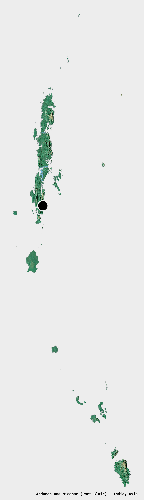
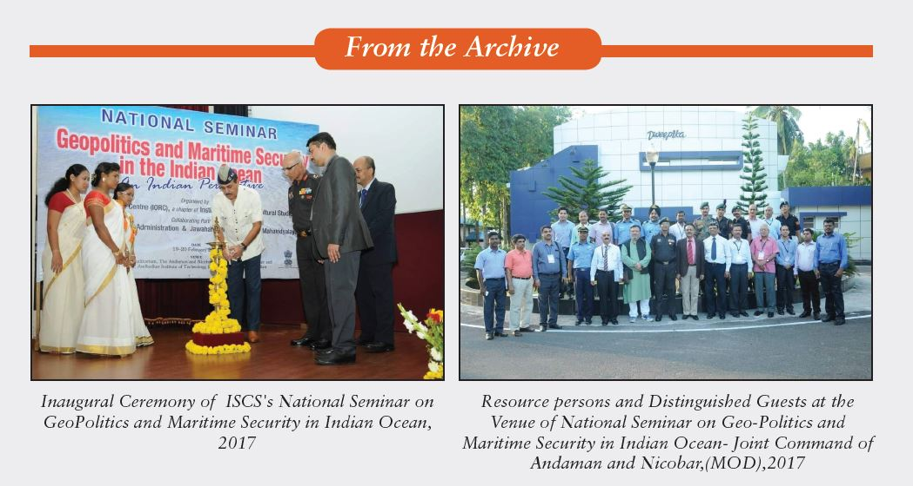

Indian Ocean, Security and Andaman and Nicobar Islands
Introduction
In terms of Geo-political significance, the Indian Ocean can play a vital role in our future endeavour. Once a neglected region, now it is viewed as the ocean of opportunities in the 21st century. Keeping in consonance with the transition of the strategic sphere of influence and the shift from continental to Ocean, there is a paradigm shift from Atlantic Ocean to Indian Ocean in the last decades because of its strong economic and political raison d'être to spotlight the Indian Ocean as a key emerging region in world affairs and strategic priorities of Asia-Pacific region. In recent past it has been seen in the context of strategic dimension; the Indian Ocean is becoming a pivotal region of cooperation and competition. Indeed, there is an obvious sense in which the Indian Ocean region is the future.
In the changed circumstances, the Indian Ocean ranked as international trade highway is more significant, while international military presence in the Indian Ocean is unprecedented. USA, Japan and China are investing hundreds of billions of dollars across the region including digital economy, energy and infrastructure projects. Meanwhile, the emergence of Russia and Saudi Arabia besides France and India as important players in the region makes more volatile and to spread influence across the entire Indian Ocean region through trade and commerce, diplomacy and strategic partnerships. The economies of many Indian Ocean countries are expanding rapidly as investors seek new opportunities in countries like India. India is the fastest growing and robust economy and global standing as an upholder of law and democratic values and it is also the one with the most potential in the region to counterbalance outside forces in the vicinity of Indian Ocean region.
Indian Ocean: An Ocean of Opportunities:
The Indian Ocean region consists of countries surrounding the Indian Ocean, including India and some African countries. In terms of global geo-politics, the Indian Ocean region has been gaining prominent attention amid the intensifying trade conflict between the USA and China. Indian Ocean is the third largest water body of the world that has vital sea lanes of communication (SLOCs) crisscrossing it and which feeds Asia’s largest economies. Around 80 percent of the world’s seaborne oil trade passes through the choke points of this ocean and therefore it literally connects the east to the west. Approximately 50 percent global container shipments sail on these waters. Furthermore, this region has emerged as blue economy – a vital intersection of maritime trade, connecting the countries which are producers of natural resources with the consumer states.
Despite growing competition among major powers, there has been a gradual build-up of regional forces in and around the Indian Ocean region and presence of extra-regional powers pose threat to the existing security framework. Eventually, the top priority is to enhance safety and security in order to ensure peace, stability and sustainable economic growth of the region. The geo-political framework in the Indian Ocean provides the strategic opportunities to India in particular and it could enhance economic and cultural interactions which would not only add to India’s prosperity, but also enable us to play a dominant role in the region.
Cooperation is key to securing maritime security in the Indian Ocean
Maritime security is an increasing concern for the Indian Ocean countries; especially security threats present real challenge to the entire global chain of supply. Besides traditional and non-traditional safety and security challenges including piracy, armed robbers at sea, terrorism, human trafficking, illicit migration, drugs trafficking, smuggling of weapons and other unlawful activities. Littoral countries around the Indian Ocean have attempted to address maritime security issues through a variety of initiatives ranging from multilateral to regional organizations redirecting its commitments to protect the common interests. Indian Ocean Rim Association (IORA) has represented geographical span and clout to become the region’s leading contributor to maintain maritime security in the Indian Ocean, particularly on those issues which require cooperation across the entire littoral states. However, due to varied interests, the Indian Ocean countries are facing tremendous challenges in terms of external threats.
Secondly, the geo-political salience of the Indian Ocean increases and the island nations particularly assume a critical role. However, taking into the account the trends in the region in 2019, India, USA, France and Japan must remember and acknowledge the priorities of the island nations for meaningful engagement. The primary concern of India is non-traditional threats such as illegal fishing, natural disasters, drug smuggling and many more. Thus, India is looking for engaging countries around the Indian Ocean to secure its own strategic interests. They should be able to offer assistance that mitigate their concerns too. India is in the process of reinforcing its military capabilities gradually towards effective ‘rebalancing’ of its naval resources, reflecting its relatively increased threats perception from the Indian Ocean region. There is also an urgent need to engage with the island nations of the western Indian Ocean. These islands can play a critical role in bridging the Indian Ocean with continental Africa. Choke points and strategic water ways such as Mozambique Channel, Cape of Good Hope and South Madagascar are key transit routes for trade between Africa, Europe, the Middle East, and Australia which are significantly important for adherence of international trade and commerce.
Strategic importance of the Andaman and Nicobar Islands
India is the largest country in the Indian Ocean region and has a military base in Andaman and Nicobar Islands in the eastern side of Bay of Bengal. The base is a point of strategic importance that can exert a great deal of influence over the sea lanes from the Middle East to the Strait of Malacca. In the wake of Kargil war, the GOI decided to establish the unified Theatre Command viz., Andaman and Nicobar Command (2001) to cater the strategic requirements of island territory and to check extra-territorial powers’ presence in the Indian Ocean region. With the inception of this command, India is furthermore better placed to maximize the utility of its own island territories in the midst of the Indian Ocean. Indeed, Andaman and Nicobar Islands offer excellent potential to enable strategic advantages and key geographic access across all choke points in the Indian Ocean.
Similarly, India is increasingly attentive to its interests in the Indian Ocean region. Therefore, Indian government advanced three-pronged strategy in the Indian Ocean region – to strengthen trade and development, good neighbourliness and friendship and security and cooperation. In view of the above strategies, India re-oriented its overall security strategy since Mumbai terrorist attack, 2008. Eventually, India will try to put forth a strong hand in this region for fundamental national security reasons. Further India is aware that protecting India’s EEZ of over 2.3 million square kilometres exclusively is a challenging task for securing India’s energy lifelines. Promoting overseas markets and fulfilling international commitments are some of the interests to which India is sensitive. India’s political leadership is convinced that matters related to maritime doctrines are going to play an increasingly important and critical role in the near future. Therefore India proposes safe and secure maritime environment to achieve sustained national development.
Under “Act East Policy”, India is engaging many littoral states and acquiring a more pronounced maritime orientation and developing closer links with one another. Diplomatic initiatives to promote economic, strategic and cultural relations with the vast Asia-Pacific region at different levels have underscored the importance of this region in recent times. Prime Minister Narendra Modi made a speech in 2015, “The Indian Ocean Region is at the top of our policy priorities.” Further he stated that the Ocean has long been a key determining factor of India’s cultural footprint with people, religion, goods and customs spreading from India to Africa, the Middle East and Southeast Asia and vice-versa. Today, 95 percent of India’s trade by volume and 68 percent of trade by value comes via Indian Ocean. 80 percent of crude oil requirement is imported by sea via the Indian Ocean. Therefore India is heavily dependent on the resources of the Indian Ocean in terms of fish and aquaculture industry, which are also major source of exports. Finally there is a strong security dimension to India’s engagement with the Indian Ocean countries, beyond traditional naval considerations. India has also been playing a more proactive role in humanitarian and disaster relief operations with the help of Andaman and Nicobar Command (ANC). In security terms piracy, unregulated migration and presence of non-state actors in the region pose significant threat to the Indian subcontinent. Similarly, non-traditional security issues such as climate change, illegal fishing, drug smuggling and human trafficking will come to play a bigger role in the geo-politics of the Indian Ocean. Interestingly, sea piracy has declined considerably in the Indian Ocean due to coordinated efforts of India and its neighbours. India is committed to secure the shared interests in Indian Ocean which indicates a close alignment between India and global interests.
India’s interactions with Indian Ocean littoral countries will enhance its ability and prove its pivotal role within geo-strategic realm of the Indian Ocean. In order to prevent extra-territorial powers and to check non-state actors, New Delhi embarked upon bilateral agreements for coordinated patrols with Myanmar, Bangladesh, Indonesia and Thailand. Although the maritime surveillance and policing capability of A&N has lately been improved considerably in the context of Mumbai attacks. New Delhi is fostering relations to build ‘bridges of friendship’ known as “MILAN” – a biannual event with the maritime neighbours to exchange ideas and sharing defence expertise with one another which is a ‘win win situation’ for each other. Indeed, there is a particular strategic importance to India up to Cambodia via Myanmar and Bangladesh, where China’s influence is growing. The India-Myanmar- Thailand Trilateral (IMT) highway will help greatly in the transport connectivity which is almost 3660 km long cross border highway network envisaged to enable trade between India and the other ASEAN countries including Vietnam. This would also serve to enhance India’s presence in the Fareast Asia. As a goodwill gesture to reciprocate, the friendly ties between India and Myanmar have already improved vastly. India has always been trying to improve its relations with its neighbouring countries especially with politically torn states of the Indian Ocean region. Meanwhile, the Indian government encouraged the illegal migrants to repatriate to their respective countries since 2005. The burgeoning migrant smuggling and human trafficking industries can pose a genuine threat to law and order, especially where they are related to organized crime and intersect with the movement of illicit goods, including weapons and drugs. In this case, it is not the migrants, but those who take advantage of them, are criminals.
Acknowledging its limited presence in the Indian Ocean, recent speeches and statements by Indian government foreign officials have underlined the need to focus on and partner with like-minded countries in the sub region. India and other stakeholders’ navies had also carried various military and naval exercises in the eastern Indian Ocean Region in recent months such as ‘Malabar exercise’. Such exercises are part of ground maritime cooperation between countries in the wake of Chinese growing influence and increased forays in the Indian Ocean region. India and USA, Russia, France and Japan appear to be realizing the strategic partnership which expands Delhi’s presence into the Indian Ocean and expanding maritime cooperation among traditional powers in the Indian Ocean aimed at maintaining a favourable strategic environment in a changing geo-political contours. It is also a known fact that China’s growing role in the Indian Ocean region and its proliferation of conventional arms to various South Asian countries including Pakistan is a serious concern for India. Paralleling this concern with China, there is also some worry about the growing role of nonstate actors in the region. In July 2020, the Indian Navy carried out a military exercise with a US navy carrier strike group led by the nuclear powered aircraft carrier USS Nimitz off the coast of the Andaman and Nicobar Islands to demonstrate a strong foothold in the Indian Ocean region.
Conclusion:
It is expected that the Indian Ocean region will be centre of commerce, cooperation and conflicts in a decade and so. The recent developments in the Indian Ocean region prompted Asia-Pacific countries except China like Australia, Japan, United States and India to join hands together in a collaborative partnership. These arrangements could be the face of India’s expanding role as a net security provider in the Indian Ocean region. It is rightly said that India is centre of the Indian Ocean and it is assigned a firm position to play a vital role in the quest for peace and stability in the region.
